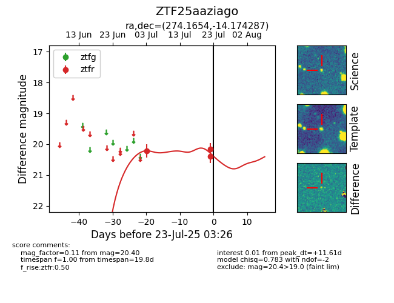

Target ZTF25aaziago at 2025-07-23 12:37, see:
FINK: fink-portal.org/ZTF25aaziago
Lasair: lasair-ztf.lsst.ac.uk/objects/ZTF25aaziago
ALeRCE: alerce.online/object/ZTF25aaziago
alt names
ZTF25aaziago (ztf,fink)
coordinates:
equatorial (ra, dec) = (274.1654,-14.17429)
galactic (l, b) = (16.3844,+1.07581)
photometry
last ztfr=20.40
3 ztfr detections
